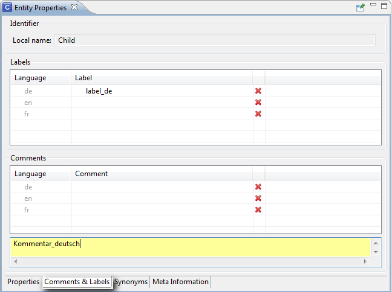

When you select a class in the navigator tree an Entity Property is displayed. This chapter describes the tabs of the Entity Properties view.
Properties
You can edit all properties of an element selected in the navigator tree in the Entity Properties view:
| • | Local name: The name of the class. |
| • | Properties: In this area you can create properties (Attributes and Relations) for your class. Relations describe the dependencies between classes. In the "Properties" column, enter the name of the attribute or relation you want to create. The autocomplete list will suggest the already existing properties. Then enter the range of the values in the Range column. The range autocomplete list contains datatypes and classes, which are respectively represented by icons "DT" and "C". |
| • | If you want to create an attribute, the range must be a datatype (for example, string, integer, boolean, number, time, datetime...). |
| • | If you want to create a relation, the range must be one of your ontology's class, which you want to relate to the active class. If you type in something that is neither a data type nor an existing class, a new class will be automatically created with the given name. |
NOTE: Press Ctrl while clicking on a table cell in order to navigate to the entities shown in the tables on the properties pages. The following navigation is supported:
| • | ClassPropertyPage to attribute/relations/range classes. |
| • | AttributePropertyPage to domain classes. |
| • | RelationPropertyPage to domain/range classes. |
| • | InstancePropertyPage to attributes/relations/related instances. |
After the range has been chosen, the cells are automatically marked with the correct icons. In the Min and Max columns you can define the cardinalities (only for ObjectLogic This is not supported for OWL and RDF). You can delete an attribute/a relation by clicking on the red cross at the end of the line. Grey shaded properties are inherited and can only be changed in the superclass that defines this property. In the Ontology Navigator, all properties will be displayed in the Properties folder. Here you can also rename them. Newly defined properties will be inherited by subclasses.
If a subclass is selected, the inherited properties will be displayed gray shaded.
NOTE: Additional information about the three mostly used attribute values:
| • | String is the simplest value type which is used for properties such as name. The value is a simple string. |
| • | Double: (There exist different numerical value types, such as float or integer) describes properties with numeric values. |
| • | Boolean: properties are simple true/false flags. |
Properties can have parameters. The syntax for writing parameters is the following:
| • | name(param1, param2,...) with "name" being the name of the relation or attribute |
| • | "param1", "param2"... the ranges of the different parameters |
| • | the parameters can have different ranges: either data types (string, integer, boolean...) or classes |
Comments & Labels
| • | Labels: Allows you to define one preferred term per language. |
| • | Comments: In the text area you can write a description of the selected element in the language that is selected in the column. If you want to write a description for another language, simply choose the language and write your description. By default, the documentation can be done in English, German and French, but you can change and reorder the languages using the OntoStudio preferences. |

Synonyms
In this tab you can define synonyms in different languages for the selected element. The languages that are displayed here can be configured in the preferences of OntoStudio. If you import old files containing synonyms without language assignment, they are displayed in an additional table called "Without language information". You can of course also use this table to enter synonyms without language assignment, like in the older OntoStudio versions.
Meta Information